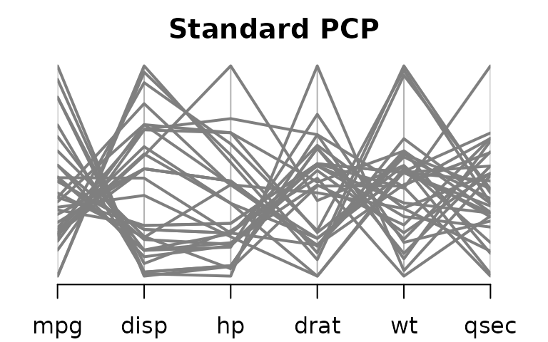
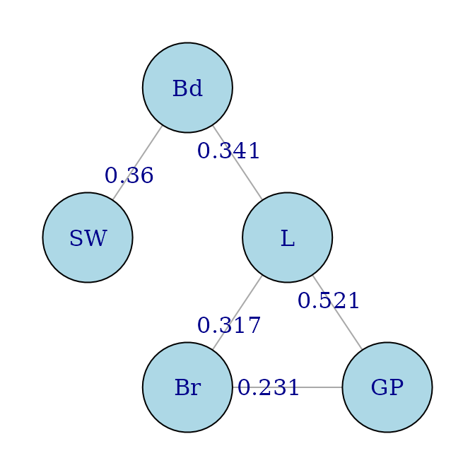

pcp.RmdPairViz is an R package which provides orderings of objects for visualisation purposes. This vignette demonstrates the use of PairViz constructing parallel coordinate plots, which place emphasis on different data patterns.
First, we select six of the variables in mtcars, and make a parallel coordinate plot. We will use the variant on a PCP provided by PairViz, which is the function pcp.
suppressPackageStartupMessages(library(PairViz))
data <- mtcars[,c(1,3:7)]
pcp(data,horizontal=TRUE,lwd=2, col="grey50",
main = "Standard PCP")
The standard PCP will plot the variables in order of appearance in the data frame. It is obvious from this plot for instance that mpg and disp are negatively correlated. By following the line segments you might be able to see that mpg and hp are also negatively correlated, but but associations with other variables are difficult to ascertain.
We could use one of the eulerian functions of PairViz to produce orderings of variables where all pairs of variables are adjacent. In the next display, we use hpaths, which gives three hamiltonians where each pair of variables is adjacent at least once.
o <- hpaths(1:ncol(data),matrix=FALSE)
par(cex.axis=.7)
pcp(data,order=o,horizontal=TRUE,lwd=2, col="grey50",
main = "Hamiltonian decomposition") From this we see that mpg is also strongly negatively correlated with wt, hp and drat, and that there is not a strong association between mpg and drat.
To make the patterns in the PCP a bit clearer, we will construct an eulerian where high correlation variables appear early on in the sequence.
The code below makes a dist with the correlation between variables.
As the function eulerian constructs a path visiting lower weight edges first (and we want to visit high correlation variables first), we form the path as
o <- eulerian(-corw)
o
#> [1] 5 2 3 5 6 1 4 6 2 4 3 6 3 1 2 4 5 1Forming the PCP based on this order we get
The first three panels on the left hand side have many parallel line segments indicative of positively correlated variables. On the right hand side of the PCP, the panels have many high-low line segments which means variables are negatively correlated.
PairViz has an augmented version of a PCP which shows summary measures for each pair of variables, to assist in interpretation.
The code below constructs the summary measures, one column for positive correlations, the second for negative correlations.
corw <- dist2edge(corw)
edgew <- cbind(corw*(corw>0), corw*(corw<0))
par(cex.axis=.7)
guided_pcp(data,edgew, path=o,pcp.col="grey50" ,lwd=2,
main="Weighted eulerian with correlation guide",
bar.col = c("lightpink1","lightcyan1"),
bar.ylim=c(-1,1),bar.axes=TRUE)The above plot shows clearly that correlation generally decreases from left to right.
If you prefer, omit the guides, but instead colour the panels according to the sign of the correlation.
pathw <- path_weights(corw,o)
corcols <- ifelse(pathw>0, "lightpink1", "lightcyan")
par(cex.axis=.7)
pcp(data,order=o,col="grey50" ,lwd=2,
main="Weighted eulerian with correlation guide",
panel.colors = corcols)The guided_pcp function also has a panel.colors argument, so it is possible to keep the guides and also colour the panels.
We access the data, remove NAs, transform two highly skewed variables, give variables shortnames, and set up a colour vector for plots.
if (!requireNamespace("alr4", quietly = TRUE)){
install.packages("alr4")
}
#> Registered S3 methods overwritten by 'lme4':
#> method from
#> cooks.distance.influence.merMod car
#> influence.merMod car
#> dfbeta.influence.merMod car
#> dfbetas.influence.merMod car
suppressPackageStartupMessages(library(alr4))
data(sleep1)
data <- na.omit(sleep1)
# these vars changed to factors in alr4, change from alr3
data$D <- as.numeric(data$D)
data$P <- as.numeric(data$P)
data$SE <- as.numeric(data$SE)
# logging the brain and body weights
data[,4:5] <- log(data[,4:5])
# short variable names
colnames(data) <- c("SW","PS" ,"TS" ,"Bd", "Br","L","GP","P" ,"SE" , "D" )
# colours for cases, split Life values into 3 equal sized groups
cols1 <- scales::alpha(c("red","navy","lightblue3" ),.6)
cols <- cols1[cut(rank(data$L),3,labels=FALSE)] Calculate scagnostics for the data. sc is a matrix whose rows are values for 9 scagnostics,
library(scagnostics)
#> Loading required package: rJava
library(RColorBrewer)
sc <- scagnostics(data)
scags <- rownames(sc)
scags
#> [1] "Outlying" "Skewed" "Clumpy" "Sparse" "Striated" "Convex"
#> [7] "Skinny" "Stringy" "Monotonic"As we will make plots involving different scagnostics, we will assign colours to scagnostics, for consistency across plots.
scag_cols <- rev(brewer.pal(9, "Pastel1"))
names(scag_cols) <- scagsDefine a utility function which returns a subset of scagnostics, retaining the class attribute.
Consider the outlying scagnostic. Suppose we want to construct a PCP, each variable appearing once, where pairs of variables with a high outlier score appear adjacently in the sequence.
scOut <- select_scagnostics(sc,"Outlying")
dOut <- edge2dist(scOut) # dOut is a dist
dOut <- as.matrix(dOut)
rownames(dOut) <- colnames(dOut)<- names(data)dOut is a symmetric matrix where each entry gives the outlying score for the scatterplot labelled by the row and column names. Note that the function edge2dist relies on the fact that objects of class scagnostics are in order (1,2), (1,3), (2,3),(1,4) etc
To find the variable ordering with the highest (or nearly highest) total outlier score use one of
o <- order_best(-dOut, maxexact=10)
o <-order_best(-dOut)
o <-order_tsp(-dOut)The first call to order_best above finds the best ordering by a brute force evaluation of all 10! factorial permutations, and so this is a bit slow. Without the maxexact=10 input, order_best evaluates only a sample of permulations for sequences of length above 9. order_tsp uses a TSP solver from package TSP. We will use the result of the first call to order_best, which gives
o <-c( 2 , 4 , 1, 5 , 6, 7 , 3 , 8, 9, 10)The guided PCP based on this ordering is
par(tcl = -.2, cex.axis=.8,mgp=c(3,.3,0))
guided_pcp(data,scOut, path=o,pcp.col=cols,lwd=1.4,
main= "Best Hamiltonian for outliers",bar.col = scag_cols["Outlying"],legend=FALSE,bar.axes=TRUE,bar.ylim=c(0,max(scOut)))Notice that panels involving discrete-valued variables P,SE and D score zero on the outlying index. The L-GP pair of variables has the highest outlier score and two outliers are evident. The outlier cases are the two species (Human and Asian Elephant) with the highest life expectancy (L). Asian Elephant also has the highest value of gestation time (GP)
outliers <- order(data$L, decreasing=T)[1:2]
rownames(data)[outliers]
#> [1] "Human" "Asian_elephant"For future use we will construct a colour vector marking these two outliers.
colOut <- rep("grey50", nrow(data))
colOut[outliers[1]] <- "red" # Human
colOut[outliers[2]] <- "blue"Suppose next we want to pick the ordering of PCP axes where high scores on the two measures Striated and Sparse are obtained.
As we did with the calculation for Outliers, we can turn scSS into a distance matrix and then use one of order_best or order_tsp to produces the best ordering.
dSS <- edge2dist(scSS[,1]) + edge2dist(scSS[,2])
# You might think edge2dist(scSS[,1]+ scSS[,2]) would work, but as scSS[,1]+ scSS[,2] is
# not of class scagnostics, edge2dist will not fill the dist in the correct order
dSS <- as.matrix(dSS)
rownames(dSS) <- colnames(dSS)<- names(data)
order_best(-dSS,maxexact=10)A shortcut calculation is
find_path(-scSS, order_best,maxexact=10) # for the best path
# or
find_path(-scSS, order_best) # for a nearly "best" pathThe best path gives
o <- c(4, 10 , 2 , 9 , 1, 7 , 8, 6 , 5 ,3) The guided PCP based on this ordering is
par(tcl = -.2, cex.axis=.8,mgp=c(3,.3,0))
guided_pcp(data,scSS, path=o,pcp.col=cols,lwd=1.4,
main= "Best Hamiltonian for Striated + Sparse",
bar.col = scag_cols[c("Striated", "Sparse")],
legend=FALSE,bar.axes=TRUE,bar.ylim=c(0,.6))The combined Striated and Sparse index rewards panels with discrete variables, as all panels with an index level above 0.4 involve a discrete variable.
For the sleep data there are 10 variables so an Eulerian path (which places all pairs of variables adjacently) will be rather long. Here is the Eulerian driven by the Outlyingness measure.
o <- find_path(-scOut, eulerian)
o
#> [1] 7 6 4 1 6 5 7 4 5 1 7 2 6 3 7 9 1 2 4 3 1 10 6 8 6
#> [26] 9 2 3 5 2 8 1 3 8 4 9 3 10 2 5 8 7 10 4 10 5 9 8 10 9The Outlying scores for the pairs of variables specified by this path are
pathw <- path_weights(scOut,o)
head(pathw)
#> L * GP Bd * L SW * Bd SW * L Br * L Br * GP
#> 0.521 0.341 0.360 0.199 0.317 0.231
par(tcl = -.2, cex.axis=.6,mgp=c(3,.3,0))
guided_pcp(data,scOut, path=o[1:25],pcp.col=cols,lwd=1.4,
main= "First 25: Eulerian for Outlying",
bar.col = scag_cols["Outlying"],
legend=FALSE,bar.axes=TRUE,bar.ylim=c(0,max(scOut)))
guided_pcp(data,scOut, path=o[25:50],pcp.col=cols,lwd=1.4,
main= "Last 26: Eulerian for Outlying",
bar.col = scag_cols["Outlying"],
legend=FALSE,bar.axes=TRUE,bar.ylim=c(0,max(scOut)))Many of the Outlying scores are zero, in fact the last 25 scores are zero. We see that GP-L has the highest overall Outlying score, and the higher Outlying scores involve the variables L,GP, Bd, SW,Br only.
The Eulerian path visiting all pairs of variables for the sleep data is of length 10. One way to focus on “interesting”" pairs (measuring interesting by outlyingness here) is the weighted Eulerian, where interesting pairs are visited early in the sequence, as above. Another approach is to drop all pairs of variables which are below some interestingness threshold, and construct a plot showing the rest. Here we will construct a PCP showing pairs of variables whose outlier score is .2 or higher.
We will do this by constructing a graph containing variable pairs whose outlier score is .2 or higher, and then forming an Eulerian of this graph. One way to form the graph is to build the complete graph based on dOut, the matrix of outlier scores, and then remove low weight edges.
g <- mk_complete_graph(dOut)Then form a graph from g keeping edges whose weight is .2 or above. The function dn_graph also deletes nodes with no edges.
g1 <- dn_graph(g,.2 , test=`>=`)A utility function for plotting a graph:
requireNamespace("igraph")
#> Loading required namespace: igraph
igplot <- function(g,weights=FALSE,layout=igraph::layout_in_circle,
vertex.size=60, vertex.color="lightblue",...){
g <- igraph::graph_from_graphnel(as(g, "graphNEL"))
op <- par(mar=c(1,1,1,1))
if (weights){
ew <- round(igraph::get.edge.attribute(g,"weight"),3)
igraph::plot.igraph(g,layout=layout,edge.label=ew,vertex.size=vertex.size,vertex.color=vertex.color,...)
}
else
igraph::plot.igraph(g,layout=layout,vertex.size=vertex.size,vertex.color=vertex.color,...)
par(op)
}and then the plot
igplot(g1, weights=TRUE, layout=igraph::layout_as_tree)
For the weight-ordered Eulerian which follows high outlying edges first, we need to construct the graph whose edges are the negative of those in g1.
It is not so straigtforward to do this using the graph package,
e <- edgeMatrix(g1,duplicates=FALSE)
ew <- eWV(g1,e)
e <- matrix(nodes(g1)[e],ncol=2,byrow=TRUE)
g2 <- ftM2graphNEL(e,-ew,edgemode="undirected")and perhaps the following is easier:
g2 <- dn_graph(mk_complete_graph(-dOut),-.2 , test=`<=`)Either way, the Eulerian and corresponding plot is
o <- eulerian(g2)
o
#> [1] "GP" "L" "Bd" "SW" "L" "Br" "GP"
o <- match(o, names(data))
par(tcl = -.2, cex.axis=.86,mgp=c(3,.3,0))
guided_pcp(data,scOut, path=o,pcp.col=colOut,lwd=1.4,
main= "Eulerian for high Outlying graph",
bar.col = scag_cols["Outlying"],
legend=FALSE,bar.axes=TRUE,bar.ylim=c(0,max(scOut)))There is one panel in the above plot which has an outlier score below 0.2. This is SW-L. Looking back at the result of eulerian(g2), the edge SW-L does not belong to g2, it was added simply to make the graph Eulerian.
The case colours used in the PCP marked the outliers in the GP-L plot found previously, Humans are in red and the Asian Elephant in blue. It looks like these two cases are responsible for the high outlier scores in all panels except Bd-SW.